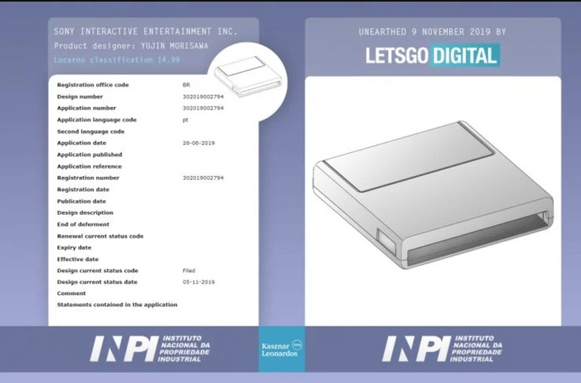

AMD için beklenen özellik geliyor!
Nvidia‘nın kullanıcılara ışın izleme teknolojisi yani Ray Tracing özelliğini sunmasıyla birlikte, AMD ile Nvidia arasındaki rekabet kızıştı. Birçok oyun sever tarafından da oldukça beğenilen Ray Tracing AMD ekran kartları için geliyor.devamını gör...

4D Mikroskoptan Alınan İnanılmaz Görüntüler, Moleküler Yapıları Sanata Dönüştürüyor
Günümüzde birçok mikroskop bulunuyor. Oldukça gelişmiş teknolojiler ile çalışan araştırmacılar yine de molekülleri istenilen netlikte göremeyebiliyor.devamını gör...

Google Stadia uygulaması Play Store’da yayınlandı
Google'ın bulut üzerinden AAA oyunları oynamaya imkan sağlayacak abonelik hizmeti Stadia, 19 Kasım'da resmen kullanıma açılacak. Hizmetin Android uygulaması ise bugün kullanıcılara sunuldu.devamını gör...

Sony ilginç PlayStation 5 patenti ile gündemde
Sony, 2020 yılında çıkacak olan yeni PlayStation 5 modeli için hazırlıklarına devam ediyor. İddialara göre şirket, Brezilya Patent Enstitüsü’ne (INPI) gelecek yıl çıkaracağı PS5 modeli için başvuruda bulundu. PS5 patenti tüm dikkatleri üzerine çekmeyi başardı.Sony PS5 için ilginç bir patent başvurusu yaptı
Şirket PS5 modeli ile gündeme gelmeye devam ediyor. Firmanın, Sanat Yönetmeni Yujin Morisawa adına patent başvurusu yaptığı ortaya çıktı. Patent başvurusu ile birlikte kullanıcıların kafasında soru işaretleri oluştu.Firmanın yeni PlayStation modeli için başvurduğu patentin geliştirme kiti ile ilgili olması dikkat çekiyor. Ayrıca bu patenti cihaz tasarımından sorumlu olan Morisawa adına yapmaları da iddiaları kanıtlar nitelikte.
Oyun kartuşu için patent başvurusunda bulunan şirketin ne tür bir hamle yapmak istediği merak ediliyor. Zira Sony hiçbir oyun konsolunda kartuş kullanmadı. Kartuşlar diğer depolama seçeneklerine göre daha az kapasite sunduğundan PS5 modelinde de gelmesi beklenmiyor.
 Patent başvurusu ile birlikte Sony yeni bir Vita sürümü çıkaracağı iddiaları da ortaya atıldı. Ancak şirket yeni bir Vita modeli çıkarmayacağını belirtmişti. Bu sebepten dolayı şirketin PS Vita modeli çıkarma ihtimali de düşüyor.
Şirket patent başvurusu ile ilgili herhangi bir açıklamada bulunmadı. Geliştirme kiti ile ilgili bir planının olmadığı bilinen firmanın rakiplerini bazı konularda saf dışı bırakmak için patent başvurusu yaptığı düşünülüyor. Geçtiğimiz günlerde şirketin 2020 yılının Şubat ayında yeni konsolu için tanıtım etkinliği gerçekleştireceği ortaya atılmıştı. Yapılacak olan etkinlikte patentin hangi sebepten alındığı da kullanıcıların merakını giderecek gibi görünüyor.
Hakkımızda
Güncel olmayan teknoloji haberleri sunan amatör bir web sitesi.